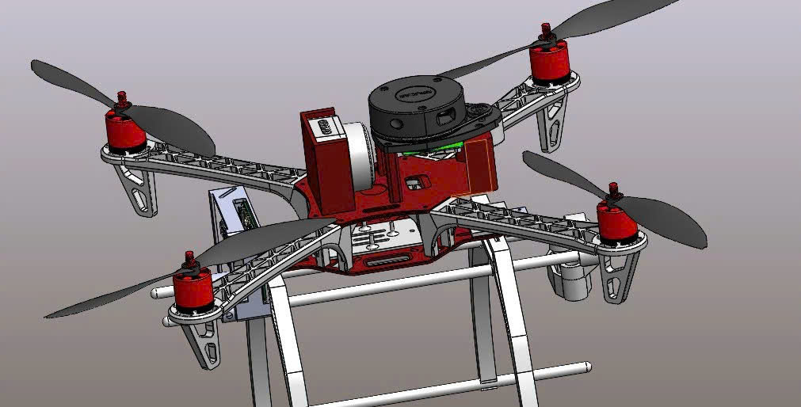
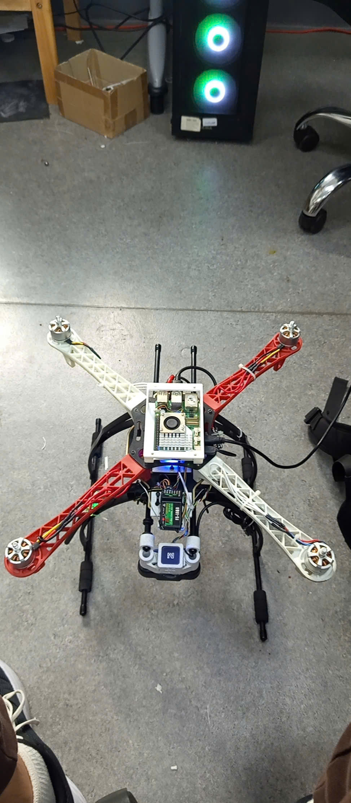
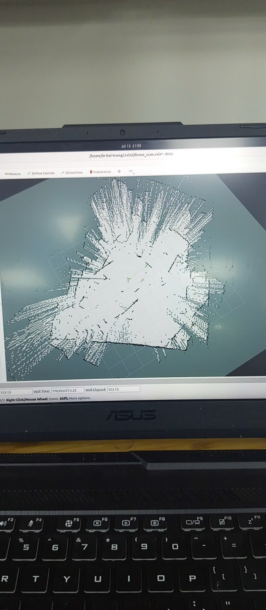
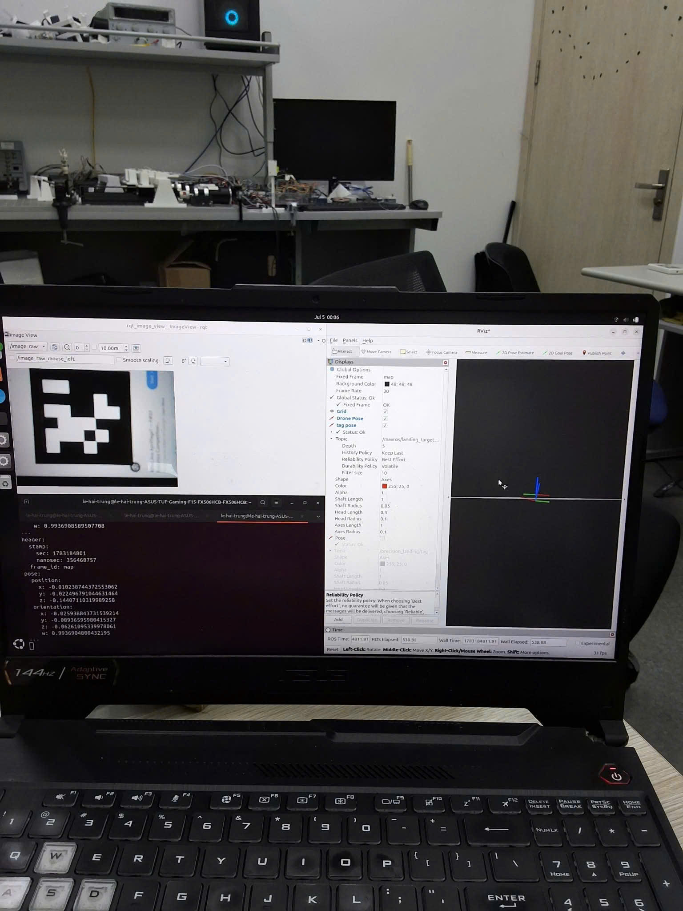

Simulated 3D reconstruction
Global point cloud generated by accumulating transformed vertical-LiDAR scans.
Flagship UAV Project
This project was developed in two connected stages: simulation validation and real-world deployment. The system combines PX4, ROS 2, horizontal-LiDAR SLAM, vertical-LiDAR scan accumulation, UAV pose estimation, and AprilTag-based precision landing for indoor GPS-denied operation.
A horizontal 2D LiDAR is used to estimate the indoor map and support localization, while a second LiDAR is mounted vertically to collect cross-sectional scans. These scans are transformed using the UAV pose and accumulated into a global 3D point cloud. The same vehicle also carries a downward-facing camera for AprilTag detection and local-frame precision landing.
Stage 1
The software architecture was first validated in PX4 SITL, ROS 2, Gazebo, and RViz. This stage was used to test survey trajectories, coordinate frames, LiDAR orientation, pose synchronization, scan transformation, and 3D point-cloud generation before deployment on hardware.

Global point cloud generated by accumulating transformed vertical-LiDAR scans.

CAD configuration showing the UAV frame and LiDAR mounting arrangement.
PX4 SITL and ROS 2 mapping workflow.
Vertical scan accumulation and point-cloud reconstruction.
Stage 2
The pipeline was then deployed on a custom PX4 UAV with a Raspberry Pi 5. Real testing covered physical sensor integration, horizontal-LiDAR indoor SLAM, vertical-LiDAR scan accumulation, AprilTag pose estimation, and precision-landing experiments. The real 3D reconstruction pipeline is functional but remains under active improvement.

Real AprilTag-guided landing test using PX4 and the local-position pipeline.
Complete deployed UAV configuration with onboard sensing and companion computer.
Two occupancy-map results from physical deployment, grouped for direct comparison of alignment, drift, and scan consistency.

Accumulated point cloud from real scans; the pipeline is still being refined.
Landing-marker placement, UAV preparation, and the physical test area.

Camera image, pose output, and RViz frame visualization during landing-system testing.
ROS 2 pose output and PX4 XY trajectory used to verify frames, orientation, and localization behavior.
Selected PCD point clouds, PGM maps, YAML metadata, and trajectory CSV files are included in the project asset folder for technical review.